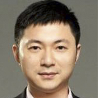

Malcolm CasSelle is an international entrepreneur and current Chief Technology Officer (CTO) and President of New Ventures attronc, Inc. (formerly Tribune Publishing). Prior to tronc, Inc., he was Senior Vice President and General Manager, Digital Media of SeaChange International. He joined SeaChange International in 2015 as part of the company's acquisition of Timeline Labs, where he served as CEO. Previously, CasSelle led startups in the digital industry, including MediaPass, Xfire and Groupon's joint venture with Tencent in China.
He has also been an active early stage investor in companies including Facebook, Zynga, and most recently Bitcoin-related companies.
CasSelle formerly served as Senior Vice President and General Manager, Digital Media of SeaChange International. Preceding SeaChange, he was CEO of MediaPass, an onlinepaywall solution designed to generate subscription-based revenues for digital content. He also served as CEO of Xfire, a global social network for core video game players with over 22 million registered users.As director of Hong Kong-based Capital Union Investments, he managed private direct investments into late-stage web companies.He was also a top executive at Groupon’s joint venture with Chinese instant messaging and gaming giant Tencent.He co-founded NetNoir, the first outside company to be accepted into the AOL Greenhouse Program,and Pacific Century CyberWorks (PCCW), a publicly traded telco service provider based in Hong Kong
CasSelle holds a bachelor's degree from MIT and a master's degree from Stanford University, both in Computer Science.He speaks Japanese and Mandarin